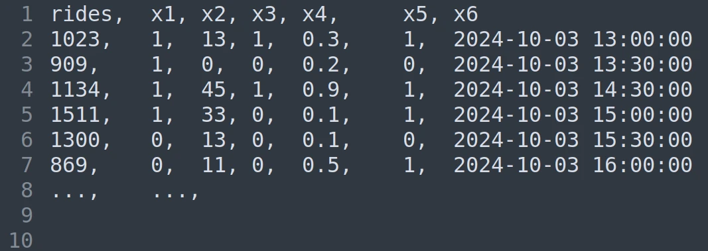
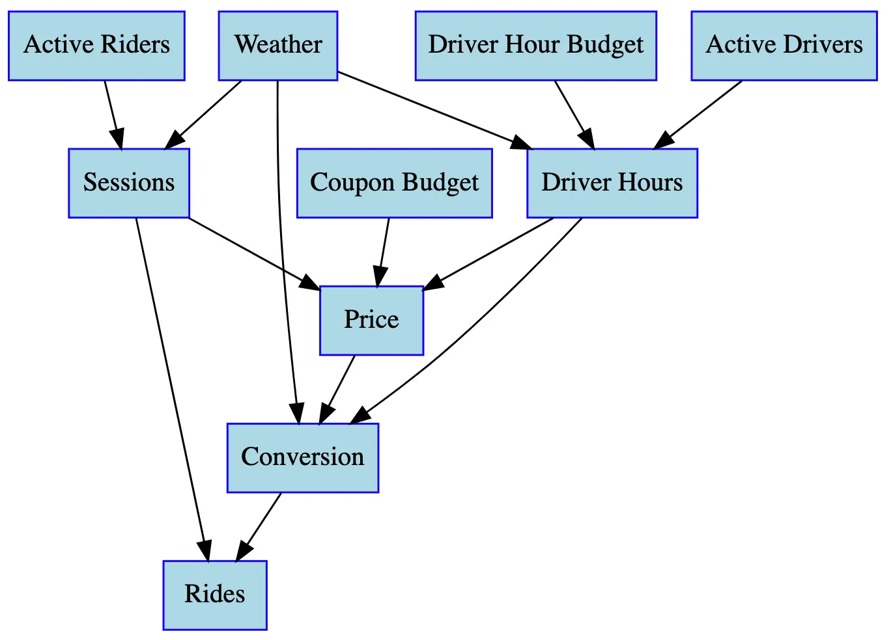
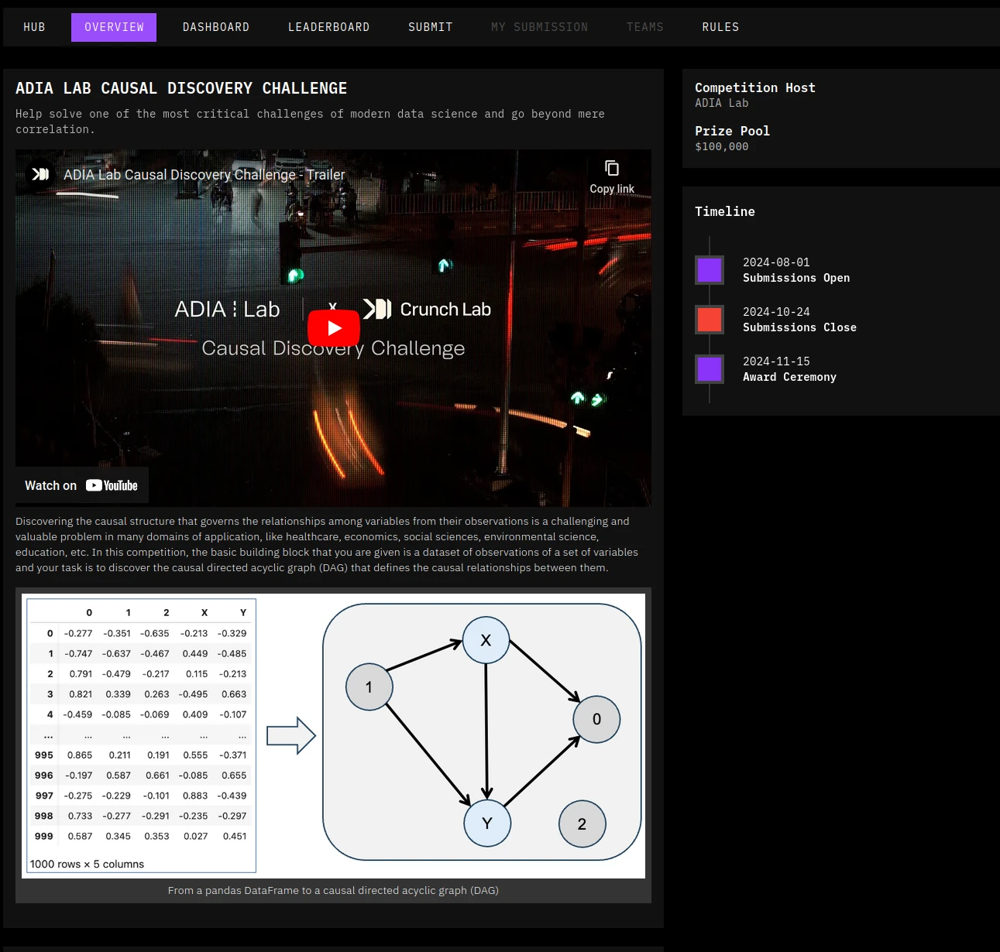

written by Roni Kobrosly on 2024-11-25 | tags: machine learning causal inference
If you're given only a tabular dataset and a target variable of interest, but with no domain knowledge around what the data represents or how it was generated, you can do a few interesting things. Let's say you work at a rideshare startup and have a Postgres table like the following, and your target variable of interest is ridership for your carshare service. All you know is that rides in any time interval is important to the business and that it's good for the business to maximize this (duh):

Given this data and no domain knowledge, you can:
Sounds impressive but... the translation of these things into real world value is near null. Even if you could predict ridership in this data really well, are the predictors leading or lagging indicators (if they're the latter, your model is pointless)? Are any of the predictors actionable/intervenable by the business? What was the data generating process and is this data sound?
Having domain knowledge around each of the above factors would be greatly helpful, and maybe you could glean some insights from that data or potentially create usable ML from it. That's good and well 🙌🏼.
Causal graphs can go above and beyond this and are immensely powerful. They allow us to formally structural our knowledge of some topic by mapping out causes and effects. See this simple causal graph that Lyft uses in thinking through the causality of predicting ridership.

In other words, causal graphs allow us to formally encode our domain knowledge on some topic. Having a true causal understanding of the mechanisms behind some business process along with real data enables us to:
The challenge is, mapping causality in data requires time, becoming a SME in your area of interest, and it's not really scalable. It's not the kind of thing you can throw into an algorithm to figure out... but it hasn't stopped people from trying. There is an entire field of research dedicating to trying to determine causality (to draw up a causal graph like the above one from Lyft), from data. It's sometimes named causal structure learning or causal discovery. There is so much interest in it that there are even competitions to see if the world's hackers and researchers can finally crack it (correctly determine a causal graph given only unmarked data). Winning first place in the following causal discovery data competition was $40k USD.

I get the drive behind it. It promises a scalable way to learn causality from data and algorithmically do what an SME could do. The only problem is, I believe this fundamentally not possible. By the way, the top performing approach used in the above dataset only achieved around 77% accuracy in correctly specifying the true DAG, which is abysmal. It would be incredibly challenging to do useful modeling with a graph that is 77% accurate in terms of edge placement.
Many attempts have been made to automate causal discovery given only a dataset. They range from simple statistical comparisons of variable triplets (if I hold variable Z constant, does it change the relationship the relationship of X and Y?), to starting with a random graph and permuting it until it looks like something that is scored as more likely to have generated the observed data, to, more recently, reframing the task as a continuous optimization problem. All in all, there are probably 20-ish unique methods proposed for automating this task and 100s open source implementations of these methods available online. Through personal experience, given the same initial dataset, if I picked 100 of the top-starred implementations and tried to generate a causal graph, I would get 100 vastly-different results. I could try to formally demonstrate this here but I've gone through this exercise so many times in the past it doesn't feel worth the time.
There are some secondary approaches people have proposed to make up for this instability and get closer to the real result:
The problem is in doing these approaches you lose scalability benefit you were originally going for or in the case of the third approach the results still aren't accurate enough to be useful.
For now, I just don't think this sort of automated causal discovery is possible. Ultimately, if the AI community is able to achieve true general artificial intelligence, it may be possible for this AI to really learn causality via exploration and research... but it's anyone's guess whether we'll get there.